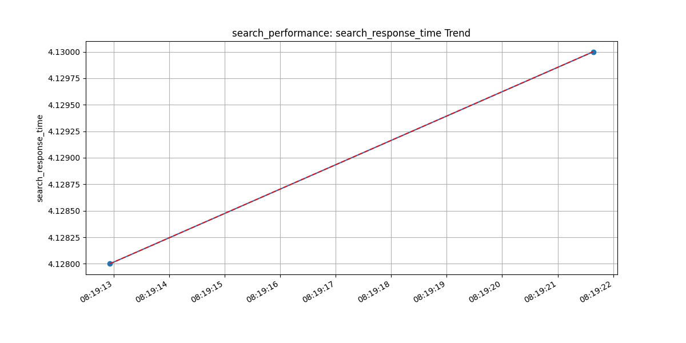
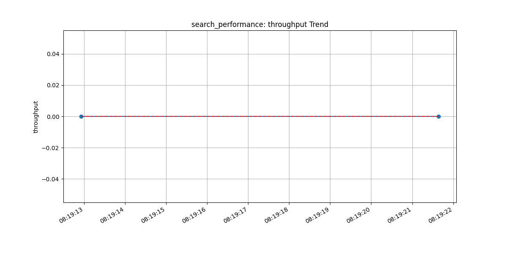
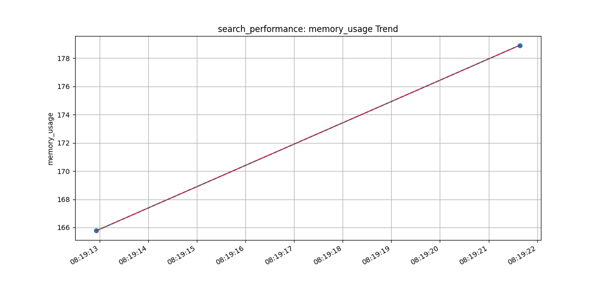
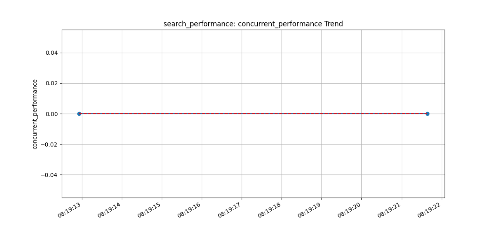

Generated on: 2025-03-12 08:19:22
| Test | Metric | Current Value | Change | Trend |
|---|---|---|---|---|
| search_performance | search_response_time | 4.13 | +0.0% | → Stable |
| throughput | 0.00 | +0.0% | → Stable | |
| memory_usage | 178.91 | +7.9% | → Stable | |
| concurrent_performance | 0.00 | +0.0% | → Stable |




Based on current performance metrics, the following recommendations are made: